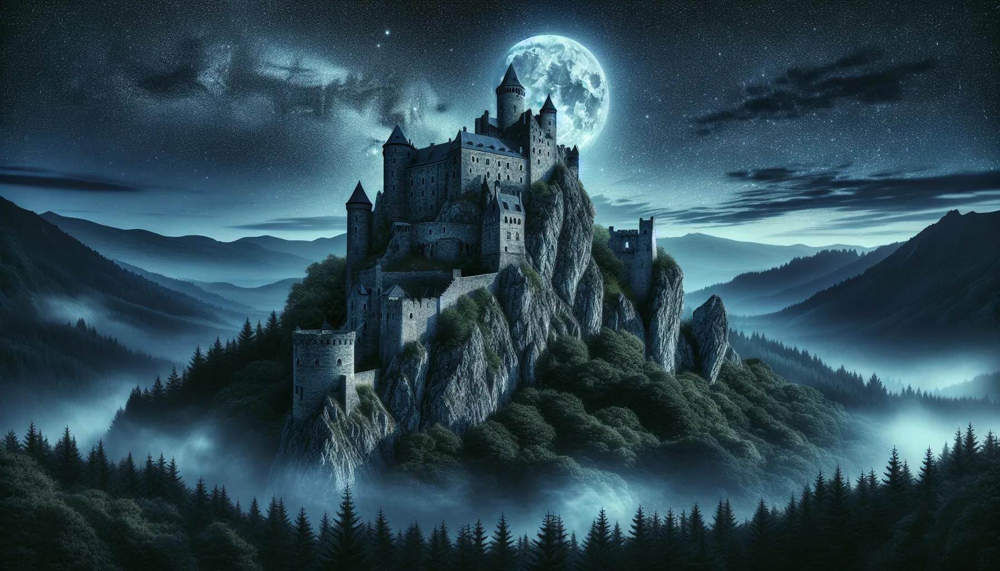

Dans la cour du château, tu interroges le capitaine des gardes. Il t'apprend qu'un marchand suspect a quitté le village peu après le vol.
Il te révèle également que plusieurs voyageurs ont disparu dans la forêt au cours des dernières semaines. Avant de partir, le capitaine te propose une carte des environs. Ces révélations te donnent deux pistes.
Que choisis-tu ?